Download CVArman Brokerage registration flow
Just when you need me, I'm there …
Project description
Arman is a brokerage that aims to convert the traditional in-person registration process into an online format. This process consists of two distinct phases. The initial phase involves obtaining a unique code from the Comprehensive Customer Information System, commonly known as the Sajam code. Possessing the Sajam code is a prerequisite for engaging in stock market operations in Iran. The second phase entails the registration process for each brokerage.
Contextual situation
There are two types of people who may join Arman:
Goals
{{ g.text }}
Design issues
Timeline
Research
{{ r.title }}
{{ r.body }}
Key insights from user research
{{ i.text }}
Analyzing the old flow
Registering in an Iranian brokerage, before the redesign.
{{ o.title }}
Old flow journey map
New flow map design process
Now that we've gained a profound understanding of both users and the various perspectives on flows, it's time to embark on designing our flow map. The primary objective is to guide a potential user seamlessly through the journey to becoming an actual customer. This flow map will serve as a handbook for both designers and developers, providing insights into different stages and states of the process. Given the intricate nature of the flow, we opted to delineate a well-defined framework, and what better starting point than the traditional registration flow?
We encounter two primary challenges in our current flow that need resolution before progressing:
{{ c.title }}
{{ c.body }}
Solution: {{ c.solution }}
As a result, the following was achieved:
Having established the framework for the flow map, the next step is to develop and integrate the details based on the Sajam API documentation, the Security & Exchange Organization documentation, and our understanding of different levels.
The complete flow map
Three levels, every Sajam account state, and the route out of each one.
Design decisions
Wireframes, the status system, the support pattern, and the contract page.